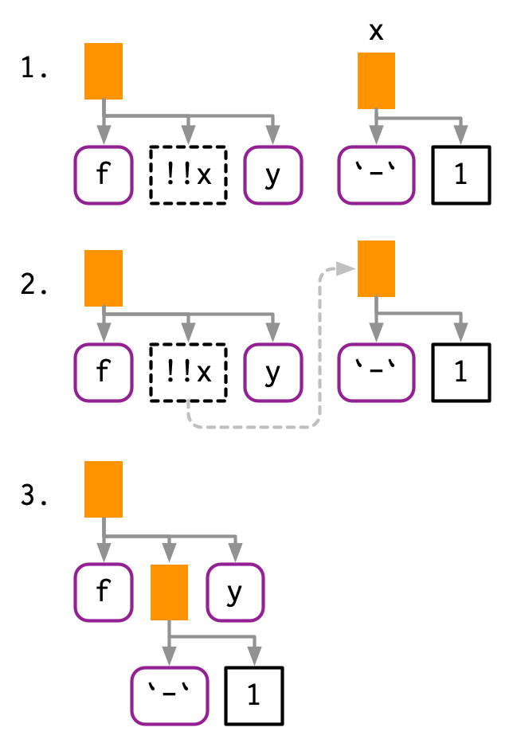

19 Quasiquotation
19.1 Introduction
Now that you understand the tree structure of R code, its time to return to one of the fundamental ideas that make expr() and ast() work: quotation. In tidy evaluation, all quoting functions are actually quasiquoting functions because they also support unquoting. Where quotation is the act of capturing an unevaluated expression, unquotation is the ability to selectively evaluate parts of an otherwise quoted expression. Together, this is called quasiquotation. Quasiquotation makes it easy to create functions that combine code written by the functions author with code written by the functions user. This helps to solve a wide variety of challenging problems.
Quasiquotation is one of the three pillars of tidy evaluation. Youll learn about the other two (quosures and the data mask) in Chapter 20. When used alone, quasiquotation is most useful for programming, particularly for generating code. But when its combined with the other techniques, tidy evaluation becomes a powerful tool for data analysis.
Outline
Section 19.2 motivates the development of quasiquotation with a function,
cement(), that works likepaste()but automatically quotes its arguments so that you dont have to.Section 19.3 gives you the tools to quote expressions, whether they come from you or the user, or whether you use rlang or base R tools.
Section 19.4 introduces the biggest difference between rlang quoting functions and base quoting function: unquoting with
!!and!!!.Section 19.5 discusses the three main non-quoting techniques that base R functions uses to disable quoting behaviour.
Section 19.6 explores another place that you can use
!!!, functions that take.... It also introduces the special:=operator, which allows you to dynamically change argument names.Section 19.7 shows a few practical uses of quoting to solve problems that naturally require some code generation.
Section 19.8 finishes up with a little history of quasiquotation for those who are interested.
Prerequisites
Make sure youve read the metaprogramming overview in Chapter 17 to get a broad overview of the motivation and the basic vocabulary, and that youre familiar with the tree structure of expressions as described in Section 18.3.
Code-wise, well mostly be using the tools from rlang, but at the end of the chapter youll also see some powerful applications in conjunction with purrr.
library(rlang)
library(purrr)19.2 Motivation
Well start with a concrete example that helps motivate the need for unquoting, and hence quasiquotation. Imagine youre creating a lot of strings by joining together words:
paste("Good", "morning", "Hadley")
#> [1] "Good morning Hadley"
paste("Good", "afternoon", "Alice")
#> [1] "Good afternoon Alice"You are sick and tired of writing all those quotes, and instead you just want to use bare words. To that end, youve written the following function. (Dont worry about the implementation for now; youll learn about the pieces later.)
cement <- function(...) {
args <- ensyms(...)
paste(purrr::map(args, as_string), collapse = " ")
}
cement(Good, morning, Hadley)
#> [1] "Good morning Hadley"
cement(Good, afternoon, Alice)
#> [1] "Good afternoon Alice"Formally, this function quotes all of its inputs. You can think of it as automatically putting quotation marks around each argument. Thats not precisely true as the intermediate objects it generates are expressions, not strings, but its a useful approximation, and the root meaning of the term quote.
This function is nice because we no longer need to type quotation marks. The problem comes when we want to use variables. Its easy to use variables with paste(): just dont surround them with quotation marks.
name <- "Hadley"
time <- "morning"
paste("Good", time, name)
#> [1] "Good morning Hadley"Obviously this doesnt work with cement() because every input is automatically quoted:
cement(Good, time, name)
#> [1] "Good time name"We need some way to explicitly unquote the input to tell cement() to remove the automatic quote marks. Here we need time and name to be treated differently to Good. Quasiquotation gives us a standard tool to do so: !!, called unquote, and pronounced bang-bang. !! tells a quoting function to drop the implicit quotes:
cement(Good, !!time, !!name)
#> [1] "Good morning Hadley"Its useful to compare cement() and paste() directly. paste() evaluates its arguments, so we must quote where needed; cement() quotes its arguments, so we must unquote where needed.
paste("Good", time, name)
cement(Good, !!time, !!name)19.2.1 Vocabulary
The distinction between quoted and evaluated arguments is important:
An evaluated argument obeys Rs usual evaluation rules.
A quoted argument is captured by the function, and is processed in some custom way.
paste() evaluates all its arguments; cement() quotes all its arguments.
If youre ever unsure about whether an argument is quoted or evaluated, try executing the code outside of the function. If it doesnt work or does something different, then that argument is quoted. For example, you can use this technique to determine that the first argument to library() is quoted:
# works
library(MASS)
# fails
MASS
#> Error in eval(expr, envir, enclos): object 'MASS' not foundTalking about whether an argument is quoted or evaluated is a more precise way of stating whether or not a function uses non-standard evaluation (NSE). I will sometimes use quoting function as short-hand for a function that quotes one or more arguments, but generally, Ill talk about quoted arguments since that is the level at which the difference applies.
19.2.2 Exercises
For each function in the following base R code, identify which arguments are quoted and which are evaluated.
library(MASS) mtcars2 <- subset(mtcars, cyl == 4) with(mtcars2, sum(vs)) sum(mtcars2$am) rm(mtcars2)For each function in the following tidyverse code, identify which arguments are quoted and which are evaluated.
library(dplyr) library(ggplot2) by_cyl <- mtcars %>% group_by(cyl) %>% summarise(mean = mean(mpg)) ggplot(by_cyl, aes(cyl, mean)) + geom_point()
19.3 Quoting
The first part of quasiquotation is quotation: capturing an expression without evaluating it. Well need a pair of functions because the expression can be supplied directly or indirectly, via lazily-evaluated function argument. Ill start with the rlang quoting functions, then circle back to those provided by base R.
19.3.1 Capturing expressions
There are four important quoting functions. For interactive exploration, the most important is expr(), which captures its argument exactly as provided:
expr(x + y)
#> x + y
expr(1 / 2 / 3)
#> 1/2/3(Remember that white space and comments are not part of the expression, so will not be captured by a quoting function.)
expr() is great for interactive exploration, because it captures what you, the developer, typed. Its not so useful inside a function:
f1 <- function(x) expr(x)
f1(a + b + c)
#> xWe need another function to solve this problem: enexpr(). This captures what the caller supplied to the function by looking at the internal promise object that powers lazy evaluation (Section 6.5.1).
f2 <- function(x) enexpr(x)
f2(a + b + c)
#> a + b + c(Its called en-expr() by analogy to enrich. Enriching someone makes them richer; enexpr()ing a argument makes it an expression.)
To capture all arguments in ..., use enexprs().
f <- function(...) enexprs(...)
f(x = 1, y = 10 * z)
#> $x
#> [1] 1
#>
#> $y
#> 10 * zFinally, exprs() is useful interactively to make a list of expressions:
exprs(x = x ^ 2, y = y ^ 3, z = z ^ 4)
# shorthand for
# list(x = expr(x ^ 2), y = expr(y ^ 3), z = expr(z ^ 4))In short, use enexpr() and enexprs() to capture the expressions supplied as arguments by the user. Use expr() and exprs() to capture expressions that you supply.
19.3.2 Capturing symbols
Sometimes you only want to allow the user to specify a variable name, not an arbitrary expression. In this case, you can use ensym() or ensyms(). These are variants of enexpr() and enexprs() that check the captured expression is either symbol or a string (which is converted to a symbol96). ensym() and ensyms() throw an error if given anything else.
f <- function(...) ensyms(...)
f(x)
#> [[1]]
#> x
f("x")
#> [[1]]
#> x19.3.3 With base R
Each rlang function described above has an equivalent in base R. Their primary difference is that the base equivalents do not support unquoting (which well talk about very soon). This make them quoting functions, rather than quasiquoting functions.
The base equivalent of expr() is quote():
quote(x + y)
#> x + yThe base function closest to enexpr() is substitute():
f3 <- function(x) substitute(x)
f3(x + y)
#> x + yThe base equivalent to exprs() is alist():
alist(x = 1, y = x + 2)
#> $x
#> [1] 1
#>
#> $y
#> x + 2The equivalent to enexprs() is an undocumented feature of substitute()97:
f <- function(...) as.list(substitute(...()))
f(x = 1, y = 10 * z)
#> $x
#> [1] 1
#>
#> $y
#> 10 * zThere are two other important base quoting functions that well cover elsewhere:
19.3.4 Substitution
Youll most often see substitute() used to capture unevaluated arguments. However, as well as quoting, substitute() also does substitution (as its name suggests!). If you give it an expression, rather than a symbol, it will substitute in the values of symbols defined in the current environment.
f4 <- function(x) substitute(x * 2)
f4(a + b + c)
#> (a + b + c) * 2I think this makes code hard to understand, because if it is taken out of context, you cant tell if the goal of substitute(x + y) is to replace x, y, or both. If you do want to use substitute() for substitution, I recommend that you use the second argument to make your goal clear:
substitute(x * y * z, list(x = 10, y = quote(a + b)))
#> 10 * (a + b) * z19.3.5 Summary
When quoting (i.e.capturing code), there are two important distinctions:
Is it supplied by the developer of the code or the user of the code? In other words, is it fixed (supplied in the body of the function) or varying (supplied via an argument)?
Do you want to capture a single expression or multiple expressions?
This leads to a 2 \(\times\) 2 table of functions for rlang, Table 19.1, and for base R, Table 19.2.
| Developer | User | |
|---|---|---|
| One | expr() |
enexpr() |
| Many | exprs() |
enexprs() |
| Developer | User | |
|---|---|---|
| One | quote() |
substitute() |
| Many | alist() |
as.list(substitute(...())) |
19.3.6 Exercises
How is
expr()implemented? Look at its source code.Compare and contrast the following two functions. Can you predict the output before running them?
f1 <- function(x, y) { exprs(x = x, y = y) } f2 <- function(x, y) { enexprs(x = x, y = y) } f1(a + b, c + d) f2(a + b, c + d)What happens if you try to use
enexpr()with an expression (i.e.enexpr(x + y)? What happens ifenexpr()is passed a missing argument?How are
exprs(a)andexprs(a = )different? Think about both the input and the output.What are other differences between
exprs()andalist()? Read the documentation for the named arguments ofexprs()to find out.The documentation for
substitute()says:Substitution takes place by examining each component of the parse tree as follows:
- If it is not a bound symbol in
env, it is unchanged. - If it is a promise object (i.e., a formal argument to a function) the expression slot of the promise replaces the symbol.
- If it is an ordinary variable, its value is substituted, unless
envis .GlobalEnv in which case the symbol is left unchanged.
Create examples that illustrate each of the above cases.
- If it is not a bound symbol in
19.4 Unquoting
So far, youve only seen relatively small advantages of the rlang quoting functions over the base R quoting functions: they have a more consistent naming scheme. The big difference is that rlang quoting functions are actually quasiquoting functions because they can also unquote.
Unquoting allows you to selectively evaluate parts of the expression that would otherwise be quoted, which effectively allows you to merge ASTs using a template AST. Since base functions dont use unquoting, they instead use a variety of other techniques, which youll learn about in Section 19.5.
Unquoting is one inverse of quoting. It allows you to selectively evaluate code inside expr(), so that expr(!!x) is equivalent to x. In Chapter 20, youll learn about another inverse, evaluation. This happens outside expr(), so that eval(expr(x)) is equivalent to x.
19.4.1 Unquoting one argument
Use !! to unquote a single argument in a function call. !! takes a single expression, evaluates it, and inlines the result in the AST.
x <- expr(-1)
expr(f(!!x, y))
#> f(-1, y)I think this is easiest to understand with a diagram. !! introduces a placeholder in the AST, shown with dotted borders. Here the placeholder x is replaced by an AST, illustrated by a dotted connection.

As well as call objects, !! also works with symbols and constants:
a <- sym("y")
b <- 1
expr(f(!!a, !!b))
#> f(y, 1)
If the right-hand side of !! is a function call, !! will evaluate it and insert the results:
mean_rm <- function(var) {
var <- ensym(var)
expr(mean(!!var, na.rm = TRUE))
}
expr(!!mean_rm(x) + !!mean_rm(y))
#> mean(x, na.rm = TRUE) + mean(y, na.rm = TRUE)!! preserves operator precedence because it works with expressions.
x1 <- expr(x + 1)
x2 <- expr(x + 2)
expr(!!x1 / !!x2)
#> (x + 1)/(x + 2)
If we simply pasted the text of the expressions together, wed end up with x + 1 / x + 2, which has a very different AST:

19.4.2 Unquoting a function
!! is most commonly used to replace the arguments to a function, but you can also use it to replace the function. The only challenge here is operator precedence: expr(!!f(x, y)) unquotes the result of f(x, y), so you need an extra pair of parentheses.
f <- expr(foo)
expr((!!f)(x, y))
#> foo(x, y)This also works when f is a call:
f <- expr(pkg::foo)
expr((!!f)(x, y))
#> pkg::foo(x, y)
Because of the large number of parentheses involved, it can be clearer to use rlang::call2():
f <- expr(pkg::foo)
call2(f, expr(x), expr(y))
#> pkg::foo(x, y)19.4.3 Unquoting a missing argument
Very occasionally it is useful to unquote a missing argument (Section 18.6.2), but the naive approach doesnt work:
arg <- missing_arg()
expr(foo(!!arg, !!arg))
#> Error in enexpr(expr): argument "arg" is missing, with no defaultYou can work around this with the rlang::maybe_missing() helper:
expr(foo(!!maybe_missing(arg), !!maybe_missing(arg)))
#> foo(, )19.4.4 Unquoting in special forms
There are a few special forms where unquoting is a syntax error. Take $ for example: it must always be followed by the name of a variable, not another expression. This means attempting to unquote with $ will fail with a syntax error:
expr(df$!!x)
#> Error: unexpected '!' in "expr(df$!"To make unquoting work, youll need to use the prefix form (Section 6.8.1):
x <- expr(x)
expr(`$`(df, !!x))
#> df$x19.4.5 Unquoting many arguments
!! is a one-to-one replacement. !!! (called unquote-splice, and pronounced bang-bang-bang) is a one-to-many replacement. It takes a list of expressions and inserts them at the location of the !!!:
xs <- exprs(1, a, -b)
expr(f(!!!xs, y))
#> f(1, a, -b, y)
# Or with names
ys <- set_names(xs, c("a", "b", "c"))
expr(f(!!!ys, d = 4))
#> f(a = 1, b = a, c = -b, d = 4)
!!! can be used in any rlang function that takes ... regardless of whether or not ... is quoted or evaluated. Well come back to this in Section 19.6; for now note that this can be useful in call2().
call2("f", !!!xs, expr(y))
#> f(1, a, -b, y)19.4.6 The polite fiction of !!
So far we have acted as if !! and !!! are regular prefix operators like + , -, and !. Theyre not. From Rs perspective, !! and !!! are simply the repeated application of !:
!!TRUE
#> [1] TRUE
!!!TRUE
#> [1] FALSE!! and !!! behave specially inside all quoting functions powered by rlang, where they behave like real operators with precedence equivalent to unary + and -. This requires considerable work inside rlang, but means that you can write !!x + !!y instead of (!!x) + (!!y).
The biggest downside98 to using a fake operator is that you might get silent errors when misusing !! outside of quasiquoting functions. Most of the time this is not an issue because !! is typically used to unquote expressions or quosures. Since expressions are not supported by the negation operator, you will get an argument type error in this case:
x <- quote(variable)
!!x
#> Error in !x: invalid argument typeBut you can get silently incorrect results when working with numeric values:
df <- data.frame(x = 1:5)
y <- 100
with(df, x + !!y)
#> [1] 2 3 4 5 6Given these drawbacks, you might wonder why we introduced new syntax instead of using regular function calls. Indeed, early versions of tidy evaluation used function calls like UQ() and UQS(). However, theyre not really function calls, and pretending they are leads to a misleading mental mode. We chose !! and !!! as the least-bad solution:
They are visually strong and dont look like existing syntax. When you see
!!xor!!!xits clear that something unusual is happening.They override a rarely used piece of syntax, as double negation is not a common pattern in R99. If you do need it, you can just add parentheses
!(!x).
19.4.7 Non-standard ASTs
With unquoting, its easy to create non-standard ASTs, i.e.ASTs that contain components that are not expressions. (It is also possible to create non-standard ASTs by directly manipulating the underlying objects, but its harder to do so accidentally.) These are valid, and occasionally useful, but their correct use is beyond the scope of this book. However, its important to learn about them, because they can be deparsed, and hence printed, in misleading ways.
For example, if you inline more complex objects, their attributes are not printed. This can lead to confusing output:
x1 <- expr(class(!!data.frame(x = 10)))
x1
#> class(list(x = 10))
eval(x1)
#> [1] "data.frame"You have two main tools to reduce this confusion: rlang::expr_print() and lobstr::ast():
expr_print(x1)
#> class(<df[,1]>)
lobstr::ast(!!x1)
#> class
#> <inline data.frame>Another confusing case arises if you inline an integer sequence:
x2 <- expr(f(!!c(1L, 2L, 3L, 4L, 5L)))
x2
#> f(1:5)
expr_print(x2)
#> f(<int: 1L, 2L, 3L, 4L, 5L>)
lobstr::ast(!!x2)
#> f
#> <inline integer>Its also possible to create regular ASTs that can not be generated from code because of operator precedence. In this case, R will print parentheses that do not exist in the AST:
x3 <- expr(1 + !!expr(2 + 3))
x3
#> 1 + (2 + 3)
lobstr::ast(!!x3)
#> `+`
#> 1
#> `+`
#> 2
#> 319.4.8 Exercises
Given the following components:
xy <- expr(x + y) xz <- expr(x + z) yz <- expr(y + z) abc <- exprs(a, b, c)Use quasiquotation to construct the following calls:
(x + y) / (y + z) -(x + z) ^ (y + z) (x + y) + (y + z) - (x + y) atan2(x + y, y + z) sum(x + y, x + y, y + z) sum(a, b, c) mean(c(a, b, c), na.rm = TRUE) foo(a = x + y, b = y + z)The following two calls print the same, but are actually different:
(a <- expr(mean(1:10))) #> mean(1:10) (b <- expr(mean(!!(1:10)))) #> mean(1:10) identical(a, b) #> [1] FALSEWhats the difference? Which one is more natural?
19.5 Non-quoting
Base R has one function that implements quasiquotation: bquote(). It uses .() for unquoting:
xyz <- bquote((x + y + z))
bquote(-.(xyz) / 2)
#> -(x + y + z)/2bquote() isnt used by any other function in base R, and has had relatively little impact on how R code is written. There are three challenges to effective use of bquote():
It is only easily used with your code; it is hard to apply it to arbitrary code supplied by a user.
It does not provide an unquote-splice operator that allows you to unquote multiple expressions stored in a list.
It lacks the ability to handle code accompanied by an environment, which is crucial for functions that evaluate code in the context of a data frame, like
subset()and friends.
Base functions that quote an argument use some other technique to allow indirect specification. Base R approaches selectively turn quoting off, rather than using unquoting, so I call them non-quoting techniques.
There are four basic forms seen in base R:
A pair of quoting and non-quoting functions. For example,
$has two arguments, and the second argument is quoted. This is easier to see if you write in prefix form:mtcars$cylis equivalent to`$`(mtcars, cyl). If you want to refer to a variable indirectly, you use[[, as it takes the name of a variable as a string.x <- list(var = 1, y = 2) var <- "y" x$var #> [1] 1 x[[var]] #> [1] 2There are three other quoting functions closely related to
$:subset(),transform(), andwith(). These are seen as wrappers around$only suitable for interactive use so they all have the same non-quoting alternative:[<-/assign()and::/getExportedValue()work similarly to$/[.A pair of quoting and non-quoting arguments. For example,
rm()allows you to provide bare variable names in..., or a character vector of variable names inlist:x <- 1 rm(x) y <- 2 vars <- c("y", "vars") rm(list = vars)data()andsave()work similarly.An argument that controls whether a different argument is quoting or non-quoting. For example, in
library(), thecharacter.onlyargument controls the quoting behaviour of the first argument,package:library(MASS) pkg <- "MASS" library(pkg, character.only = TRUE)demo(),detach(),example(), andrequire()work similarly.Quoting if evaluation fails. For example, the first argument to
help()is non-quoting if it evaluates to a string; if evaluation fails, the first argument is quoted.# Shows help for var help(var) var <- "mean" # Shows help for mean help(var) var <- 10 # Shows help for var help(var)ls(),page(), andmatch.fun()work similarly.
Another important class of quoting functions are the base modelling and plotting functions, which follow the so-called standard non-standard evaluation rules: http://developer.r-project.org/nonstandard-eval.pdf. For example, lm() quotes the weight and subset arguments, and when used with a formula argument, the plotting function quotes the aesthetic arguments (col, cex, etc). Take the following code: we only need col = Species rather than col = iris$Species.
palette(RColorBrewer::brewer.pal(3, "Set1"))
plot(
Sepal.Length ~ Petal.Length,
data = iris,
col = Species,
pch = 20,
cex = 2
)
These functions have no built-in options for indirect specification, but youll learn how to simulate unquoting in Section 20.6.
19.6 ... (dot-dot-dot)
!!! is useful because its not uncommon to have a list of expressions that you want to insert into a call. It turns out that this pattern is common elsewhere. Take the following two motivating problems:
What do you do if the elements you want to put in
...are already stored in a list? For example, imagine you have a list of data frames that you want torbind()together:dfs <- list( a = data.frame(x = 1, y = 2), b = data.frame(x = 3, y = 4) )You could solve this specific case with
rbind(dfs$a, dfs$b), but how do you generalise that solution to a list of arbitrary length?What do you do if you want to supply the argument name indirectly? For example, imagine you want to create a single column data frame where the name of the column is specified in a variable:
var <- "x" val <- c(4, 3, 9)In this case, you could create a data frame and then change names (i.e.
setNames(data.frame(val), var)), but this feels inelegant. How can we do better?
One way to think about these problems is to draw explicit parallels to quasiquotation:
Row-binding multiple data frames is like unquote-splicing: we want to inline individual elements of the list into the call:
dplyr::bind_rows(!!!dfs) #> x y #> 1 1 2 #> 2 3 4When used in this context, the behaviour of
!!!is known as spatting in Ruby, Go, PHP, and Julia. It is closely related to*args(star-args) and**kwarg(star-star-kwargs) in Python, which are sometimes called argument unpacking.The second problem is like unquoting the left-hand side of
=: rather than interpretingvarliterally, we want to use the value stored in the variable calledvar:tibble::tibble(!!var := val) #> # A tibble: 3 1 #> x #> <dbl> #> 1 4 #> 2 3 #> 3 9Note the use of
:=(pronounced colon-equals) rather than=. Unfortunately we need this new operation because Rs grammar does not allow expressions as argument names:tibble::tibble(!!var = value) #> Error: unexpected '=' in "tibble::tibble(!!var =":=is like a vestigial organ: its recognised by Rs parser, but it doesnt have any code associated with it. It looks like an=but allows expressions on either side, making it a more flexible alternative to=. It is used in data.table for similar reasons.
Base R takes a different approach, which well come back to in Section 19.6.4.
We say functions that support these tools, without quoting arguments, have tidy dots100. To gain tidy dots behaviour in your own function, all you need to do is use list2().
19.6.1 Examples
One place we could use list2() is to create a wrapper around attributes() that allows us to set attributes flexibly:
set_attr <- function(.x, ...) {
attr <- rlang::list2(...)
attributes(.x) <- attr
.x
}
attrs <- list(x = 1, y = 2)
attr_name <- "z"
1:10 %>%
set_attr(w = 0, !!!attrs, !!attr_name := 3) %>%
str()
#> int [1:10] 1 2 3 4 5 6 7 8 9 10
#> - attr(*, "w")= num 0
#> - attr(*, "x")= num 1
#> - attr(*, "y")= num 2
#> - attr(*, "z")= num 319.6.2 exec()
What if you want to use this technique with a function that doesnt have tidy dots? One option is to use rlang::exec() to call a function with some arguments supplied directly (in ...) and others indirectly (in a list):
# Directly
exec("mean", x = 1:10, na.rm = TRUE, trim = 0.1)
#> [1] 5.5
# Indirectly
args <- list(x = 1:10, na.rm = TRUE, trim = 0.1)
exec("mean", !!!args)
#> [1] 5.5
# Mixed
params <- list(na.rm = TRUE, trim = 0.1)
exec("mean", x = 1:10, !!!params)
#> [1] 5.5rlang::exec() also makes it possible to supply argument names indirectly:
arg_name <- "na.rm"
arg_val <- TRUE
exec("mean", 1:10, !!arg_name := arg_val)
#> [1] 5.5And finally, its useful if you have a vector of function names or a list of functions that you want to call with the same arguments:
x <- c(runif(10), NA)
funs <- c("mean", "median", "sd")
purrr::map_dbl(funs, exec, x, na.rm = TRUE)
#> [1] 0.444 0.482 0.298exec() is closely related to call2(); where call2() returns an expression, exec() evaluates it.
19.6.3 dots_list()
list2() provides one other handy feature: by default it will ignore any empty arguments at the end. This is useful in functions like tibble::tibble() because it means that you can easily change the order of variables without worrying about the final comma:
# Can easily move x to first entry:
tibble::tibble(
y = 1:5,
z = 3:-1,
x = 5:1,
)
# Need to remove comma from z and add comma to x
data.frame(
y = 1:5,
z = 3:-1,
x = 5:1
)list2() is a wrapper around rlang::dots_list() with defaults set to the most commonly used settings. You can get more control by calling dots_list() directly:
.ignore_emptyallows you to control exactly which arguments are ignored. The default ignores a single trailing argument to get the behaviour described above, but you can choose to ignore all missing arguments, or no missing arguments..homonymscontrols what happens if multiple arguments use the same name:str(dots_list(x = 1, x = 2)) #> List of 2 #> $ x: num 1 #> $ x: num 2 str(dots_list(x = 1, x = 2, .homonyms = "first")) #> List of 1 #> $ x: num 1 str(dots_list(x = 1, x = 2, .homonyms = "last")) #> List of 1 #> $ x: num 2 str(dots_list(x = 1, x = 2, .homonyms = "error")) #> Error: Arguments can't have the same name. #> We found multiple arguments named `x` at positions 1 and 2If there are empty arguments that are not ignored,
.preserve_emptycontrols what to do with them. The default throws an error; setting.preserve_empty = TRUEinstead returns missing symbols. This is useful if youre usingdots_list()to generate function calls.
19.6.4 With base R
Base R provides a Swiss army knife to solve these problems: do.call(). do.call() has two main arguments. The first argument, what, gives a function to call. The second argument, args, is a list of arguments to pass to that function, and so do.call("f", list(x, y, z)) is equivalent to f(x, y, z).
do.call()gives a straightforward solution torbind()ing together many data frames:do.call("rbind", dfs) #> x y #> a 1 2 #> b 3 4With a little more work, we can use
do.call()to solve the second problem. We first create a list of arguments, then name that, then usedo.call():args <- list(val) names(args) <- var do.call("data.frame", args) #> x #> 1 4 #> 2 3 #> 3 9
Some base functions (including interaction(), expand.grid(), options(), and par()) use a trick to avoid do.call(): if the first component of ... is a list, theyll take its components instead of looking at the other elements of .... The implementation looks something like this:
f <- function(...) {
dots <- list(...)
if (length(dots) == 1 && is.list(dots[[1]])) {
dots <- dots[[1]]
}
# Do something
...
}Another approach to avoiding do.call() is found in the RCurl::getURL() function written by Duncan Temple Lang. getURL() takes both ... and .dots which are concatenated together and looks something like this:
f <- function(..., .dots) {
dots <- c(list(...), .dots)
# Do something
}At the time I discovered it, I found this technique particularly compelling so you can see it used throughout the tidyverse. Now, however, I prefer the approach described previously.
19.6.5 Exercises
One way to implement
exec()is shown below. Describe how it works. What are the key ideas?exec <- function(f, ..., .env = caller_env()) { args <- list2(...) do.call(f, args, envir = .env) }Carefully read the source code for
interaction(),expand.grid(), andpar(). Compare and contrast the techniques they use for switching between dots and list behaviour.Explain the problem with this definition of
set_attr()set_attr <- function(x, ...) { attr <- rlang::list2(...) attributes(x) <- attr x } set_attr(1:10, x = 10) #> Error in attributes(x) <- attr: attributes must be named
19.7 Case studies
To make the ideas of quasiquotation concrete, this section contains a few small case studies that use it to solve real problems. Some of the case studies also use purrr: I find the combination of quasiquotation and functional programming to be particularly elegant.
19.7.1 lobstr::ast()
Quasiquotation allows us to solve an annoying problem with lobstr::ast(): what happens if weve already captured the expression?
z <- expr(foo(x, y))
lobstr::ast(z)
#> zBecause ast() quotes its first argument, we can use !!:
lobstr::ast(!!z)
#> foo
#> x
#> y19.7.2 Map-reduce to generate code
Quasiquotation gives us powerful tools for generating code, particularly when combined with purrr::map() and purr::reduce(). For example, assume you have a linear model specified by the following coefficients:
intercept <- 10
coefs <- c(x1 = 5, x2 = -4)And you want to convert it into an expression like 10 + (x1 * 5) + (x2 * -4). The first thing we need to do is turn the character names vector into a list of symbols. rlang::syms() is designed precisely for this case:
coef_sym <- syms(names(coefs))
coef_sym
#> [[1]]
#> x1
#>
#> [[2]]
#> x2Next we need to combine each variable name with its coefficient. We can do this by combining rlang::expr() with purrr::map2():
summands <- map2(coef_sym, coefs, ~ expr((!!.x * !!.y)))
summands
#> [[1]]
#> (x1 * 5)
#>
#> [[2]]
#> (x2 * -4)In this case, the intercept is also a part of the sum, although it doesnt involve a multiplication. We can just add it to the start of the summands vector:
summands <- c(intercept, summands)
summands
#> [[1]]
#> [1] 10
#>
#> [[2]]
#> (x1 * 5)
#>
#> [[3]]
#> (x2 * -4)Finally, we need to reduce (Section 9.5) the individual terms into a single sum by adding the pieces together:
eq <- reduce(summands, ~ expr(!!.x + !!.y))
eq
#> 10 + (x1 * 5) + (x2 * -4)We could make this even more general by allowing the user to supply the name of the coefficient, and instead of assuming many different variables, index into a single one.
var <- expr(y)
coef_sym <- map(seq_along(coefs), ~ expr((!!var)[[!!.x]]))
coef_sym
#> [[1]]
#> y[[1L]]
#>
#> [[2]]
#> y[[2L]]And finish by wrapping this up in a function:
linear <- function(var, val) {
var <- ensym(var)
coef_name <- map(seq_along(val[-1]), ~ expr((!!var)[[!!.x]]))
summands <- map2(val[-1], coef_name, ~ expr((!!.x * !!.y)))
summands <- c(val[[1]], summands)
reduce(summands, ~ expr(!!.x + !!.y))
}
linear(x, c(10, 5, -4))
#> 10 + (5 * x[[1L]]) + (-4 * x[[2L]])Note the use of ensym(): we want the user to supply the name of a single variable, not a more complex expression.
19.7.3 Slicing an array
An occasionally useful tool missing from base R is the ability to extract a slice of an array given a dimension and an index. For example, wed like to write slice(x, 2, 1) to extract the first slice along the second dimension, i.e.x[, 1, ]. This is a moderately challenging problem because it requires working with missing arguments.
Well need to generate a call with multiple missing arguments. We first generate a list of missing arguments with rep() and missing_arg(), then unquote-splice them into a call:
indices <- rep(list(missing_arg()), 3)
expr(x[!!!indices])
#> x[, , ]Then we use subset-assignment to insert the index in the desired position:
indices[[2]] <- 1
expr(x[!!!indices])
#> x[, 1, ]We then wrap this into a function, using a couple of stopifnot()s to make the interface clear:
slice <- function(x, along, index) {
stopifnot(length(along) == 1)
stopifnot(length(index) == 1)
nd <- length(dim(x))
indices <- rep(list(missing_arg()), nd)
indices[[along]] <- index
expr(x[!!!indices])
}
x <- array(sample(30), c(5, 2, 3))
slice(x, 1, 3)
#> x[3, , ]
slice(x, 2, 2)
#> x[, 2, ]
slice(x, 3, 1)
#> x[, , 1]A real slice() would evaluate the generated call (Chapter 20), but here I think its more illuminating to see the code thats generated, as thats the hard part of the challenge.
19.7.4 Creating functions
Another powerful application of quotation is creating functions by hand, using rlang::new_function(). Its a function that creates a function from its three components (Section 6.2.1): arguments, body, and (optionally) an environment:
new_function(
exprs(x = , y = ),
expr({x + y})
)
#> function (x, y)
#> {
#> x + y
#> }NB: The empty arguments in exprs() generates arguments with no defaults.
One use of new_function() is as an alternative to function factories with scalar or symbol arguments. For example, we could write a function that generates functions that raise a function to the power of a number.
power <- function(exponent) {
new_function(
exprs(x = ),
expr({
x ^ !!exponent
}),
caller_env()
)
}
power(0.5)
#> function (x)
#> {
#> x^0.5
#> }Another application of new_function() is for functions that work like graphics::curve(), which allows you to plot a mathematical expression without creating a function:
curve(sin(exp(4 * x)), n = 1000)
In this code, x is a pronoun: it doesnt represent a single concrete value, but is instead a placeholder that varies over the range of the plot. One way to implement curve() is to turn that expression into a function with a single argument, x, then call that function:
curve2 <- function(expr, xlim = c(0, 1), n = 100) {
expr <- enexpr(expr)
f <- new_function(exprs(x = ), expr)
x <- seq(xlim[1], xlim[2], length = n)
y <- f(x)
plot(x, y, type = "l", ylab = expr_text(expr))
}
curve2(sin(exp(4 * x)), n = 1000)Functions like curve() that use an expression containing a pronoun are known as anaphoric functions101.
19.7.5 Exercises
In the linear-model example, we could replace the
expr()inreduce(summands, ~ expr(!!.x + !!.y))withcall2():reduce(summands, call2, "+"). Compare and contrast the two approaches. Which do you think is easier to read?Re-implement the Box-Cox transform defined below using unquoting and
new_function():bc <- function(lambda) { if (lambda == 0) { function(x) log(x) } else { function(x) (x ^ lambda - 1) / lambda } }Re-implement the simple
compose()defined below using quasiquotation andnew_function():compose <- function(f, g) { function(...) f(g(...)) }
19.8 History
The idea of quasiquotation is an old one. It was first developed by the philosopher Willard van Orman Quine102 in the early 1940s. Its needed in philosophy because it helps when precisely delineating the use and mention of words, i.e.distinguishing between the object and the words we use to refer to that object.
Quasiquotation was first used in a programming language, Lisp, in the mid-1970s.103 Lisp has one quoting function `, and uses , for unquoting. Most languages with a Lisp heritage behave similarly. For example, Racket (` and @), Clojure (` and ~), and Julia (: and @) all have quasiquotation tools that differ only slightly from Lisp. These languages have a single quoting function and you must call it explicitly.
In R, however, many functions quote one or more inputs. This introduces ambiguity (because you need to read the documentation to determine if an argument is quoted or not), but allows for concise and elegant data exploration code. In base R, only one function supports quasiquotation: bquote(), written in 2003 by Thomas Lumley. However, bquote() has some major limitations which prevented it from having a wide impact on R code (Section 19.5).
My attempt to resolve these limitations led to the lazyeval package (2014-2015). Unfortunately, my analysis of the problem was incomplete and while lazyeval solved some problems, it created others. It was not until I started working with Lionel Henry on the problem that all the pieces finally fell into place and we created the full tidy evaluation framework (2017). Despite the newness of tidy evaluation, I teach it here because it is a rich and powerful theory that, once mastered, makes many hard problems much easier.
Programmers Niche: Macros in R, R News 1, no. 3 (2001): 1113, https://www.r-project.org/doc/Rnews/Rnews_2001-3.pdf.
This is for compatibility with base R, which allows you to provide a string instead of a symbol in many places:
"x" <- 1,"foo"(x, y),c("x" = 1).Discovered by Peter Meilstrup and described in R-devel on 2018-08-13.
Prior to R 3.5.1, there was another major downside: the R deparser treated
!!xas!(!x). This is why in old versions of R you might see extra parentheses when printing expressions. The good news is that these parentheses are not real and can be safely ignored most of the time. The bad news is that they will become real if you reparse that printed output to R code. These roundtripped functions will not work as expected since!(!x)does not unquote.Unlike, say, Javascript, where
!!xis a commonly used shortcut to convert an integer into a logical.This is admittedly not the most creative of names, but it clearly suggests its something that has been added to R after the fact.
Anaphoric comes from the linguistics term anaphora, an expression that is context dependent. Anaphoric functions are found in Arc (a Lisp like language), Perl, and Clojure.
You might be familiar with the name Quine from quines, computer programs that return a copy of their own source when run.
Alan Bawden, Quasiquotation in Lisp, in PEPM 99, 1999, 412, http://citeseerx.ist.psu.edu/viewdoc/summary?doi=10.1.1.309.227.